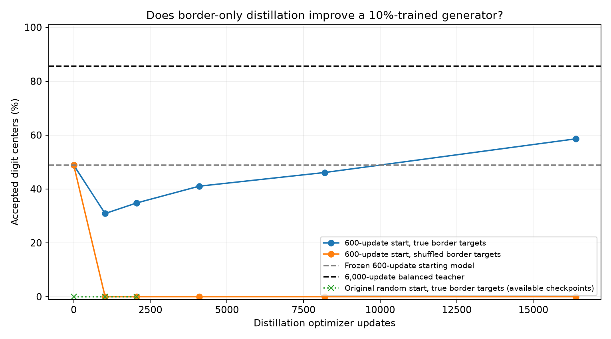
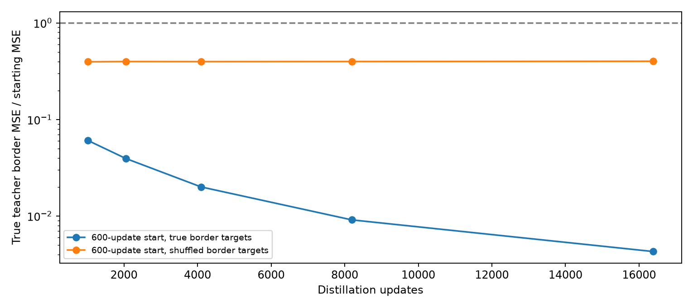
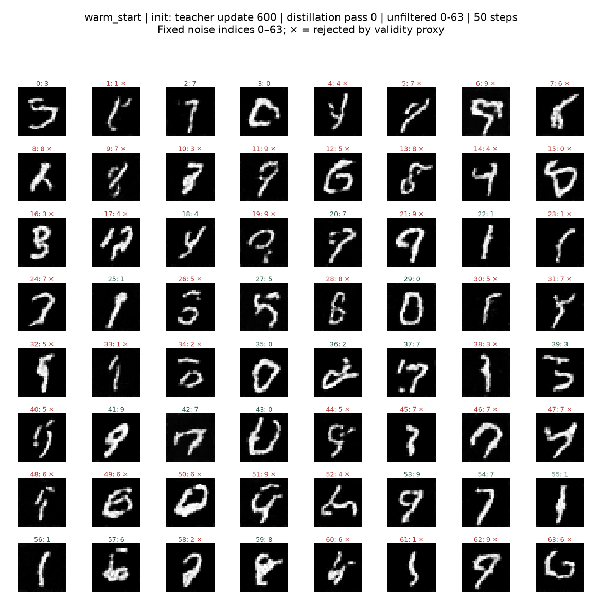
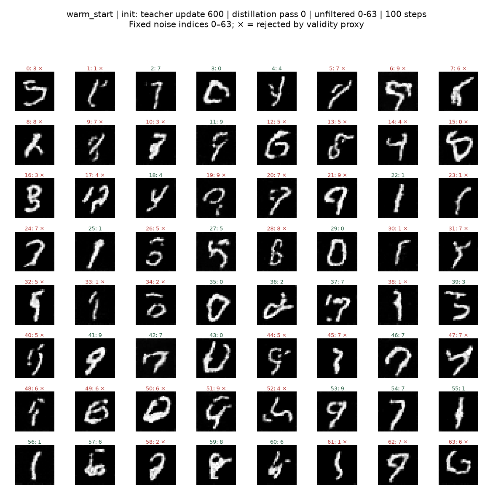
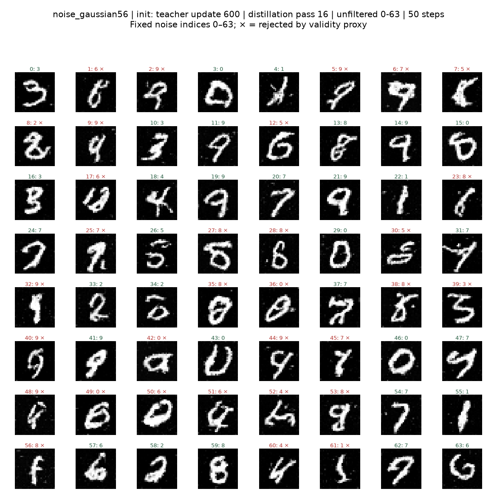
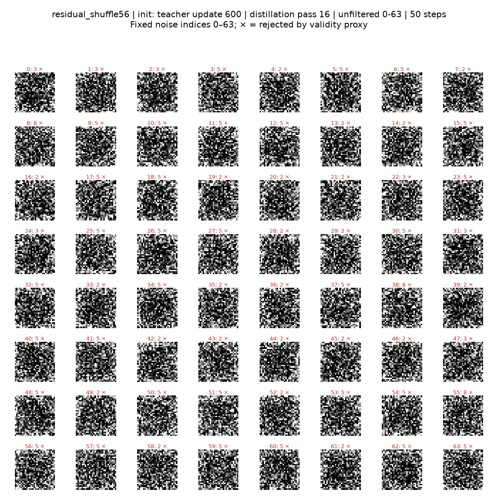

Status: completed; stage: finished. 10% means 600 of 6,000 teacher-training updates. Students copy the reconstructed online weights at update 600 and start fresh Adam optimizers. The starting model has seen 76,800 real-digit presentations. Only the initial 600-update reconstruction uses MNIST; subsequent distillation uses Gaussian inputs and border targets. Compare against the frozen starting model to measure improvement beyond existing capability. This is one training seed; evaluator acceptance is a proxy that requires image inspection.
Two arms share initialization, 65,536 unique queries, input noise, batch 64, Adam 10⁻⁴ and 16 passes. Only teacher-target pairing differs. Models, all per-image scores, checkpoint curves and unfiltered endpoint images are retained.
Fixed protocol · Execution ledger · Raw table · Original random-start report


| Model | Pass | Bank | Sampler steps | N | Accepted | Classes ≥1% | Scores |
|---|---|---|---|---|---|---|---|
| 6,000-update balanced teacher | 0 | validation | 50 | 256 | 85.5% | 10/10 | Raw scores |
| 6,000-update balanced teacher | 0 | endpoint16 | 50 | 2000 | 80.4% | 10/10 | Raw scores |
| Frozen 600-update starting model | 0 | validation | 50 | 256 | 48.8% | 10/10 | Raw scores |
| Frozen 600-update starting model | 0 | validation | 100 | 256 | 50.0% | 10/10 | Raw scores |
| Frozen 600-update starting model | 0 | endpoint16 | 50 | 2000 | 43.5% | 10/10 | Raw scores |
| Frozen 600-update starting model | 0 | endpoint16 | 100 | 2000 | 44.1% | 10/10 | Raw scores |
| 600-update start, true border targets | 1 | validation | 50 | 256 | 30.9% | 9/10 | Raw scores |
| 600-update start, shuffled border targets | 1 | validation | 50 | 256 | 0.0% | 0/10 | Raw scores |
| 600-update start, true border targets | 2 | validation | 50 | 256 | 34.8% | 9/10 | Raw scores |
| 600-update start, shuffled border targets | 2 | validation | 50 | 256 | 0.0% | 0/10 | Raw scores |
| 600-update start, true border targets | 4 | validation | 50 | 256 | 41.0% | 9/10 | Raw scores |
| 600-update start, shuffled border targets | 4 | validation | 50 | 256 | 0.0% | 0/10 | Raw scores |
| 600-update start, true border targets | 8 | validation | 50 | 256 | 46.1% | 9/10 | Raw scores |
| 600-update start, shuffled border targets | 8 | validation | 50 | 256 | 0.0% | 0/10 | Raw scores |
| 600-update start, true border targets | 16 | validation | 50 | 256 | 58.6% | 10/10 | Raw scores |
| 600-update start, true border targets | 16 | endpoint16 | 50 | 2000 | 54.7% | 10/10 | Raw scores |
| 600-update start, true border targets | 16 | endpoint16 | 100 | 2000 | 54.5% | 10/10 | Raw scores |
| 600-update start, shuffled border targets | 16 | validation | 50 | 256 | 0.0% | 0/10 | Raw scores |
| 600-update start, shuffled border targets | 16 | endpoint16 | 50 | 2000 | 0.0% | 0/10 | Raw scores |
Acceptance differences use the same generation noises. Sampling intervals do not measure training-seed uncertainty.
{
"noise_gaussian56_minus_frozen_start_steps50": {
"acceptance_difference": 0.1125,
"paired_sampling_bootstrap95": [
0.086,
0.1395
],
"n": 2000,
"interpretation": "Image-sampling uncertainty only; one training seed."
},
"noise_gaussian56_minus_frozen_start_steps100": {
"acceptance_difference": 0.1045,
"paired_sampling_bootstrap95": [
0.077,
0.1325
],
"n": 2000,
"interpretation": "Image-sampling uncertainty only; one training seed."
},
"residual_shuffle56_minus_frozen_start_steps50": {
"acceptance_difference": -0.4345,
"paired_sampling_bootstrap95": [
-0.456,
-0.4125
],
"n": 2000,
"interpretation": "Image-sampling uncertainty only; one training seed."
},
"true_minus_shuffled_steps50": {
"acceptance_difference": 0.547,
"paired_sampling_bootstrap95": [
0.525,
0.569
],
"n": 2000,
"interpretation": "Image-sampling uncertainty only; one training seed."
}
}
{
"data_rng_bit_identical": true,
"online": {
"bit_identical": false,
"max_absolute_difference": 0.064810024574399,
"relative_l2_difference": 0.0038061533836534255
},
"ema": {
"bit_identical": false,
"max_absolute_difference": 0.03996915044263005,
"relative_l2_difference": 0.0020916531545538087
},
"comparison_update": 2000,
"original_checkpoint": "results/flow/noise_ablation/teachers/checkpoints/balanced_base_2000.pt",
"description": "Same saved random ancestor, batches and settings; numerical differences reported above"
}




